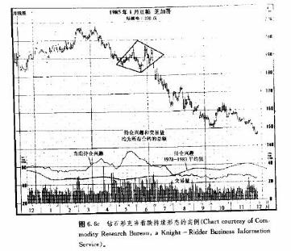
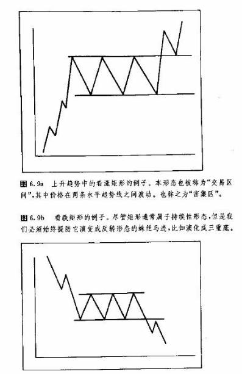

第六章持续形态
引言
本章探讨的图表形态属于持续型形态。这类形态通常表示，图表上的横向价格伸展仅仅是当前趋势的暂时休止，下一步的市场运动将与事前趋势的原方向一致。前一章的那些形态通常表明趋势的反转正在形成，因此与这里介绍的对象截然不同。
反转形态与持续形态的另一个差别是它们的持续时间不同。反转形态的发展过程通常花费更长的时间，并且它也构成了主要的趋势变化。相反，持续形态通常为时较短暂，在更多的情况下，明显属于短暂形态或中等形态的类别。
请注意，我们连续使用了“通常”这个限定语。在所有的图表形态中，我们都不得不面对着一定的普遍倾向性，而没有严格的规则可循。总有例外，甚至有时我们对价格形态所作的分类也是模棱两可的。三角形通常属干持续形态，但有时也会作为反转形态出现;虽然三角形通常被右成中等形态，它们偶尔也可能出现在长线图表上，具有主要趋势的意义。:三角形的一种变体—反转三角形—通常标志着市场的主要顶部。甚至连头肩形这种最著名的主要反转形态，偶尔也会以I}整形态’的面目出现。
即使图表形态因为存在一定程度的含混以及偶尔的例外而打了折扣，一般也仍然可以把它们归结为上述两种类型。并且，只要图表分析者解释得当，就可以由其确定它们之后的大部分时间内可能出现的市场行为。
三角形
我们首先研究三角形。三角形可分为三类—对称三角形、上升三角形和下降三角形(有些图表分析者还把所谓扩展三角形或者喇叭形归结为三角形的第四种类型，我们以后将单独处理这种形态)。每种三角形均具备稍有差别的形状，具有不同的预测意义。
图6.1a到c是各种三角形的图例。对称三角形(见图6.1a )具有两条逐渐聚拢的趋势线，上面的直线下倾，下面的直线上升。左侧的垂直虚线，表示了形态的高度，称为底边，两条直线在右侧相交，交点称为顶点。对称三角形也被称为“绕线筒”，显然这是针对其外形而称的。
上升三角形的下边线上倾，上边线水平(见图6. 1b)。下降三角形(图6.1c)与之相反，上边线下降。下边线水平。以下我们就来分别地进行研究。
对称三角形
对称三角形(绕线筒)通常属于持续型形态。它表示既有趋势暂时处于休整状态，随后将恢复发展。在6.1c所示的例子中，原先趋势向上，因而最终可能性较大的是，以价格向上突破来了结这场三角形调整。如果原先趋势向下，那么对称三角形具有看跌的意义。
在三角形中，我们要求其中至少有四个转折点.请记住，至少需要两个点才能作出一条趋势线.因此，为了得到两条聚拢的趋势线，市场在每根线上必须至少发生两次转折。在图6. la中.三角形实际上从点
1开始，这也就是上升趋势的调整的开端。接着，价格撤回点2。然后上冲到点3.点3低于点1。仅当价格从点3再度回落之后，我们方能作出上边趋势线。
注意，点4高过点2。仅当价格从点4向上反弹之后，我们才能作出上倾的下边线。正是在这一刻，分析者开始揣测，手头这个形态可能属于对称三角形:现在.我们得到了四个转折点(1,2,3,4)，以及两条聚
拢的趋势线。
虽然三角形的最低要求是四个转折点，但是实际上，大部分三角形通常具有6个转折点，如图6.1所示。这就是说在三角形内，其实包含了三个峰和三个谷，总共形成5个波浪(在我们讲到艾略特波浪理论
时，还要进一步讨论三角形的五浪倾向)。
三角形完结的时间极限
三角形形态的完结，具有时间极限，这就是两边线的交点—顶点。一般地，价格应该在三角形横向宽度的一半到四分之三之间的某个位置上，顺着原趋势方向突围而出。该宽度就是从左侧竖直的底边到右侧顶点的距离。因为两条聚拢的边线必定相交，所以，只要画出了两条边线，我们就可以测得上述距离。向上突破的信号是市场对上边趋势线的穿越。如果价格始终局限于三角形内，并超出了上述四分之三的范
围，那么，这个三角形就开始丧失其潜力，这通常意味着价格将持久地漂泊下去，直到顶点以外。
于是，三角形构成了价格与时间的一种有趣的结合。一方面，聚拢的趋势线界定了形态的价格边界，我们可以根据价格对上边趋势线的穿越(在上升趋势情况下)，判断何时该形态完成、原趋势恢复。另一方
面，两条趋势线通过其形态宽度，也提供了时间目标。举例来说，如果其宽度为20个星期，那么突破就应发生在第10周到第15周之间的某个时刻。
实际的趋势性信号，是以收市价格穿越某条趋势线为标志的。有时候，价格突破后也会向这条趋势线反扑一下。在上升趋势中，上边的趋势线被突破后演化为支撑线。而在下降趋势中，下边线被突破后变成阻挡线。在突破后，顶点也构成重要的支撑或阻挡水平。类似于前两章的有关内容，我们也可以应用各种穿越原则来鉴别此处的突破。最低穿越原则是市场以收市价越过两条趋势线之一，而不能仅仅是一个日内穿越。
偶然的伪信号
出于某些奇怪的原因，有时在看涨三角形中，恰恰在上升趋势恢复之前，会闪现出看跌信号,这种信号通常发生在三角形的第五个阶段(即最后阶段)。它们经常在二角形内接近顶点的地方出现，表明其中的横向趋势向右侧延伸得过远r。其特点是，在两三日内，价格先以重大交易量向一下突破，随后又同详急剧地向上回弹，并恢复上升趋势。
交易量的重要性
在三角形内，价格的摆动幅度越来越小，交易量也应相应地日趋萎缩。这种交易量的收缩倾向，在所有的调整性形态中都普遍存在。但当趋势线被穿越从而形态完成时，交易量应该明显地增加。在随后的反扑中，交易量轻弱。
关于交易量，交易活动更为活跃。然后，当趋势恢复时，，我们还需要说明两点。同反转形态的情况一样，交易量在向上突破时比向下突破时，更具重要意义，在所有调整形态中，当上升趋势恢复时，交易量的相应增加都是至关紧要的。而在向下突破时，交易量虽然也重要，但在头几天内并不如此关键。事实上，当价格向下突破时，如果交易量大大地跳升，特别是在接近三角形顶点的情况下，反而是可能出现虚假看跌信号的警兆，前面曾谈到过这个现象。
关于交易量要说明的第二点是，虽然交易活动在形态形成过程中逐渐减弱，但如果我们仔细地考察交易量的变化，通常仍可获得较重的交易量到底是发生在上升运动中还是下降运动中的线索。举例来说，上升趋势应当有个微弱的倾向，当价格上弹时交易量较重，而在价格下跌时交易量较轻。
测算技术
对三角形，我们也有测算技术。在对称三角形的情况下，一般可以采用几种方法。最简单的是，先测出三角形最宽的部分(底边)的竖直线段的高度，然后从突破点或顶点起，顺势测出相等的距离。图6.2a展示了从突破点向相应方向投射等距离的情形，我偏向于这种方法。
第二种方法是，从底边的端点(点A处)出发，作出平行于下边趋势线的平行线。这条管道线就是上升趋势上方的价格目标。因为市场还有一种倾向，新的上升过程同以前的上升过程(三角形形成前)，具有大体上差不多的坡度或倾角，所以，价格触及上方管道线的地方既是价格目标，也是大致的时间目标。
上升三角形
上升三角形和下降三角形都是对称三角形的变体，但是它们分别具有不同的预测意义。图6. 3a和b是上升三角形的例子。请注意，其中上边趋势线持平，而下边线则上升。本形态显示，买方比卖方更为积极主动。它属于看涨形态，通常以向上的突破作为完结的标志。
上升三角形和下降三角形均与对称三角形有着很重要的区别。上升三角形或下降三角形无论出现在趋势结构中的哪个部分，都具有明确的预测意义。上升三角形看涨，下降三角形看跌。另一方面，对称三角形在本质上属于中性形态。不过，这并不是说对称三角形不具备预潞价值，相反，因为对称三角形是持续形态，所以，分析者只要找出原有趋势的方向，然后假设该既有趋势即将恢复就够了。
有些人宣称，因为对称三角形没有先天性的偏向，所以，其本身不具预测价值。这种说法是错误的，因为本类三角形的结果通常是原先趋势的继续。很清楚，对称三角形确实具有预测价值。
现在我们回到上升三角形上。如前所述，上升三角形经常是看涨的。其看涨的突破，以收市价格决定性地超出上边水平趋势线为标志.正如所有各种有效向上突破那样，此时交易量应当显著地增加。随后
市场对被突破趋势线(水平的上边线)的反扑也不罕见，但它应在较轻的交易量下发生。
测算技术
上升三角形的测算技术相对简单。先量出该形态最宽处的高度，然后从突破点起，简单地向上投射出相等距离就行了。这也是利用价格形态的波动性来确定其价格目标的一例。
充当底部形态的上升三角形
上升三角形最经常地出现在上升趋势中，属于持续性形态。不过，它有时也会以底部形态的面目出现。在下降趋势处于强弩之末的阶段时，出现上升三角形也是不足为怪的。但即使是在这种情况下，该形态的含义也仍然是看涨的。上边线的突破标志着底部形态的完成，构成了牛市信号。上升三角形和下降三角形有时均被称为直角三角形。
下降三角形
下降三角形仅仅是上升三角形的镜像，一般认为，它属于看跌形态。注意，在图6. 4a和b中，上边线下降，下边线水平.这种形态说明，卖方比买方更为积极主动。它通常是以向下突破而告完结的。向下的突破信号以收市价格决定性地低于下边趋势线为标志，并且在通常情况下，交易量应有所增加。有时市场随后也会发生反扑现象，不过在下边趋势线下应遭到阻挡。
其测算技术与上升三角形完全相同—分析者先在左侧底边测得形态的高度，然后从突破点起，向下投射出相同的距离。
充当顶部形态的下降三角形
尽管下降三角形属于持续形态，通常发生在下降趋势中，但偶尔也能在市场顶部发现其踪迹。当这种形态确然发生在顶部过程时，要辨别它并不困难。在这种情况下，如果收市价低于水平的下边线，可能就标志着向下的主要趋势反转。
交易量形态
在上升三角形和下降三角形中，它们的交易量形态很相似。随着形态的逐步发展，交易量也相应地萎缩，然后在突破时又大为增加。同对称三角形的情况一样，在其形成过程中，图表分析者可以细究交易量形态配合价格摆动所呈现出的蛛丝马迹.这就是说，在上升形态中交易量倾向于在价格上弹时稍重，而在价格下落时稍轻。在下降形态中，交易量应该在价格向下时较重而在向上反弹时较轻。
三角形的时间因素
关于三角形，我们最后要考虑的是它们的时间尺度。一般认为，三角形属于中等形态，即它的形成过程通常花费1个月以上的时间，但一般少于3个月。持续时间短于1个月的三角形可能属于另外的形态类别，例如三角旗形，后面我们很快就讲到了。早些时候我们曾说过，三角形有时也会出现在长期的价格图表上，但是就其自然本性来说，它还是日线图的专利。
扩大形态(喇叭形)
下面这种形态，是三角形的不同寻常的变体，相对较少见。它其实是反向的三角形。以前所探讨的三角形的两条边线都是相互聚拢的。喇叭形与此正相反，可谓名符其实。如图6. 5a所示，在扩大形态中，两条边线逐渐分离，呈现出扩大三角形的轮廓。
本形态的交易量形态也与众不同。在其余三角形中，随着价格的摆动幅度逐步缩小，交易量也倾向于相应地收缩。但是在扩大形态中，情况恰恰相反。交易量随着价格摆幅的日益放大，而相应地扩张。这种情况显示市场已失去控制，变得极为情绪化。因为本形态代表了公众参与交易活动非常积极的情形(这是不同寻常的)，所以最常发生在市场的主要顶部过程中。因此，喇叭形通常是看跌形态。
喇叭形顶如何形成
图6.5a例示了该形态最常见的外形。图中出现了三个依次增高的峰(点1,3、和5)以及两个依次降低的谷(点2、4)。显然，在这种形态下进行交易是极为困难的，因为在其形成过程中出现了许多错误信号。在前面关于顺应趋势理论中，我们曾讲过，当前一个高点被向上穿越时，通常意味着上升趋势的恢复，而价格向下突破前一个低点，一般表明下降趋势的开始或者恢复，但是这个形态却与上述理论背道而驰。在这里，如果交易者机械地根据向上或向下的突破信号采取行动，则必将受挫于一系列错误信号。
形态的完成
当来自第三峰的回落突破了第二谷(见点6)之后，本形态就完成了，并且构成了主要看跌信号。如同检验所有的重要突破一样，为了减少错误信一号，这里我们也可采以借助各种过滤器。因为本形态具有三峰、两谷，有时又被称为五点反转形态。请注意，这里再度出现了5这个数字，在前面关于对称二角形的讨论中，我们也曾提到过它。
在本形态完成顶部过程、发出看跌信号后，价格反扑是很正常的，其回撤幅度可能达到前一段下跌的50%,然后，初生的再恢复厂跌。尽管第三峰通常高于前二峰，但它偶尔甚至也会达不到第二峰的高度。在这种情况下，分析者据之可以得出市场上冲失败的及早警示，而且该形态实际上已经开始同具有下倾颈线的头肩形顶相像起来。
扩大形态小结
首先，扩大形态是相对少见的。不过一旦它出现了，通常便是市场的重要顶部。它的形状如同扩大的三角形，有三个依次上升的峰，二个相继下降的谷。在价格摆动幅度逐步增大的同时，伴随着交易活动的逐步增长。在第三峰完成后，如果价格跌破第二谷，就标志着该形态的完结。
钻石形态
钻石形态通常出现在市场顶部，是另一种相对罕见的形态。本形态的特别之处在于，它其实是由两种不同类型的三角形—扩大三角形和对称三角形组合而成的。请看图6. 6a，该钻石形的前一半类似一个扩大三角形，后一半是对称三角形。这种价格变化所对应的交易量形态是，在形态前一半，交易量扩张;在后一半，交易量随着价格摆幅的日益缩小而逐渐减轻。
在这种形态中，先是两根边线逐渐分离，然后两条边线再逐渐聚拢，围成了与钻石相像的图表形状，图表形态由此得名。本形态相对少见，一般出现在市场的顶部。它经常地充当反转形态，而较少作为持续形态露面。在钻石形的后半部分，当下边的上升趋势线被向下突破后，形态完成。一般在其向下突破时，会配合着交易活动的增加。
如何测算钻石形
钻石形的测算技术与前面三角形形态类似。我们先测出该形态最宽部分的竖直距离，然后，从突破点起向下投射相同距离。有时候也会出现反扑现象，市场回到下方的阻挡线附近，但新趋势应从这里恢复。
结语
以上对钻石形的讨论，结束了我们对三角形这个课题的研究.在图表形态分析中，三角形通常指对称三兔形、上升三角形和下降三角形三者。扩大三角形和钻石形代表了三角形的奇特的变体。下面我们继续讨论其余一些常用的持续形态。
旗形和三角旗形
扩大形态和钻石形相对较少见，而旗形和三角旗形在期货市场却相当普遍。因为它们在外形上非常相似，往往出现在趋势结构中的相同位置上，并具备相同的交易量和测算原则，所以，我们通常把它们放在一起研究。
旗形和三角旗形表示市场充满活力，但暂时处于休止状态。事实上，剧烈的、几乎是直线式的市场运动，是旗形和三角旗形出现的先决条件。这两种形态说明，市场的陡峭上升或下跌过于“超前”了，因而需要稍作休整，“喘息一会儿”，然后再顺着原方向飞奔而去。
旗形和三角旗形是两种最可靠的持续形态，仅在极少数情况下引发市场的反转。图6.7a和b显示了两者的图例。首先，请注意在形态出现前的陡峭的价格上升及其重大的伴随交易量。还请注意在该调整形成过程中交易量的急剧萎缩，以及在向上突破时交易活动的突然进发。

旗形和三角旗形的结构
这两种形态的结构稍有不同。旗形与平行四边形或矩形相像，是由两条向流行趋势相反方向倾斜的、相互平行的趋势线围成的。在下降趋势中，旗形或许具有稍稍向上的倾角。
三角旗形以两条相互聚拢的趋势线为特征，从总体上说，更呈现出水平向发展的特点，极像小的对称三角形。在两种形态中，还有一个重要的先决条件。随着两个形态的逐渐形成，交易量应该显著地枯竭。
相对而言。两个形态都是短期的，应当在1到3个星期内完成。三角旗形和旗形在下降趋势中延续时间往往较短，经常不超过一到两周。在上升趋势中，两种形态的完成均以对上边趋势线的突破为标志。
而在下降趋势中，下边趋势线的突破意味着下降趋势的恢复。对上述趋势线的突破应当发生在较重大的交易量背景下。通常，向上突破时的交易量因素比向下突破时，起着更为关键的验证作用。

测算技术
两个形态的测算意义是一致的。旗形和三角旗形被比喻成旗帜在旗杆中点作“降半旗状”。旗杆就是先前的剧烈上升或下跌的轨迹。而“半旗”的含义是，这类小型持续形态倾向于出现在整个运动的中点。一般地说，在形态完成之后，即趋势恢复后，市场将重复原先的那一半“旗杆，’(或者说形态形成之前的运动)。
更确切地说，我们应当从原始的突破点起计算先前运动的距离。换言之，起算点应为当前趋势萌生时信号发生的那一点。具体地说，这一点要么是价格穿越重要支撑或阻挡水平的点，要么是市场突破重要趋势线的点。然后，从旗形或三角旗形的突破点—在上升趋势中，为上边线被突破的点，而在下降趋势中，为下边线被突破的点一一起，顺着当前趋势的方向，量出相等的竖直距离，就得到了价格目标，
小结
我们来总结一下两种形态的要点。
1.在两者之前，市场上几乎都是直线式的价格运动(称作旗杆)，且其交易量重大。
2.然后，价格在非常轻弱的交易量下休整一到三个星期。
3.趋势恢复。同时交易活动迸发式地增强。
4.两种形态均出现在当前市场运动的中点附近。
5.三角旗形同小型的水平向对称三角形相像。
6.旗形像小的平行四边形，其倾斜方向与流行趋势相反。
7，在下降趋势中，两种形态持续时间都较短。
8.在期货市场，两者都非常普遍。
楔形
就外形和持续时间两方面看，楔形与对称三角形相似。象对称三角形那样，该形态也以两条相互聚拢的趋势线为特征，其交点称为顶点。从时间角度看岛楔形通常持续一个月以上，但不超过三个月。从而属于中等形态的范畴。
楔形的与众不同之处在其明显的倾角上。楔形具有鲜明的倾角，方向很明确，要么向上，要么向下。一般地说。楔形如同旗形一样，其倾斜方向与流行趋势相反。于是。下降楔形属于看涨形态，而上升楔形为看跌形态。注意。在图6. 8a中是一个看张楔形，它在两条聚拢的趋势线包围下倾斜向下。而在图6.8b所示下降趋势中，两条聚拢的趋势线无疑是倾斜向上的。

充当顶部或底部反转形态的楔形
楔形最经常地出现在既存趋势中间，通常属干持续形态。锲形也可能出现在顶部或底部过程中，标志着趋势的反转。但这种情况比前者少见得多。在上升趋势接近尾声时，图表分析者或许会观察到一个清晰的上升楔形。因为在上升趋势中，持续性楔形应当逆着流行趋势而倾斜向下，所么，这个不寻常的上升楔形就成了一条重要线索:这是看跌的而不是看涨的。在底部，下降楔形或者是熊市可能终结的警讯。
无论楔形出现在市场运动的中间还是尾部，市场分析者总能从以下这条一般经验中得到些启发:上升楔形看跌，下降楔形看涨。
市场在从楔形形态中突围之前，通常至少要朝顶点经历过其全部距离的2/3，有时甚至直达到顶点后，形态才告完结(在楔形中，有些时候价格倾向于一直移动到顶点，然后才能突围而出。这是它与对称三角形的另一个区别)。在楔形形成过程中，交易量应当收缩,而在突破时易量应增加。楔形在下降趋势中比在上升趋势中持续的时间更短·
矩形
矩形有许多绰号，不过在价格图表上通常是易于辨识的。它也是趋势中的休整阶段，在形态中，价格在两条平行的水平直线之间横向伸展(见图6. 9a到c)。
有时，我们把矩形称为交易区间或密集区。在道氏理论中.相应的说法为“直线”。不管怎样称谓，它通常只是既存趋势中的调整阶段，最终市场将顺着之前的趋势方向完结它。从预测意义这方面来看，它算是与对称三角形类似，但它的两条趋势线边线都是水平直线，而不是聚拢相交的直线。
当价格决定性地收市于上边界或下边界以外时，矩形形态完成，并且指向现行趋势的方向。不过市场分析者必须始终保持警惕，留意矩形调整会不会演化成反转形态。例如，在图6. 9a所示的上升趋势中，请注意，其中三个峰或许可能演化成三重顶反转形态。
交易量形态的重要性
在这种形态中，交易量形态是值得观察的重要线索。因为价格向两个方向的摆动幅度均相当广阔，所以分析者应当密切注意在哪个方向上交易量更重。如果在价格上冲时交易量较重，而下撤时交易量较轻，那么该形态可能是上升趋势中的持续形态。如果较重的交易量发生在向下运动这一边，那么这可以看成趋势可能正在反转的警讯。

可以在局限于一定区间内的价格波动中交易
有些图表师针对局限于这类形态的价格波动，在价格下跌到接近底边的时候买进，在价格上冲到接近上边的时候卖出。这种方法使短线交易商得以充分利用界定良好的价格边界，从一个无趋势可寻的市场中获利。因为我们把头寸建立在形态的极限位置上，在其上方和下方，市场的趋势状态有明确的区分，所以风险相对较小。只要交易区间完好如初，这种反趋势的交易方法就行之有效。当突破发生时，交易商不仅应当立即了结亏损的头寸，而且应该顺着新趋势的方向建立新的头寸以扭转原来的头一寸方向。摆动指数在横向交易区间中特别有用，但是一旦发生突破，其效用便会下降。我们将在第十章讨论这方面问题。
也有些交易商认为，既然矩形是持续形态，那么在上升趋势中，就应当在价格范围的下边界建立多头头寸，或者在下降趋势中，在接近上边界时建立空头头寸。另外也有人完全避开此类无趋势的市场，直等到清晰的突破信号出现后，才投入资金。第十五章我们将研究在处于这种多变的、不明朗的市场阶段时，自动交易系统遇到的间题。大多数趋势顺应系统在这种横向伸展的无趋势市场中表现极拙劣。在这儿，朋友们只要对这一点知道个大概就够了。
其它相似性和差异性
就持续时间来说，矩形通常属于1到3个月的类别，与三角形和楔形类似。但其交易量形态与其它持续形态有所不同。由于矩形的价格摆动范围广阔，避免了在其余形态中通常可见的交易活动萎缩的现象。
关于矩形，最常用的测算技术是基于价格区间的高度之上的。我们先从顶到底地量出交易区间的高度，然后从突破点起，顺势投射相等的竖直距离。本方法类似于前面提到的各种竖直侧算技术，也是以市场波动性为基础的。在我们介绍点数图分析中的“数算法”时，还将就水平方向的价格测算方法作进一步的探讨。
前面讲过的价格突破时的交易量变化特点，以及反扑动作出现的可能性等内容，此处也同样适用。在矩形中，因为上边界和下边界均是水平的，有良好的界定，所以，支撑和阻挡水平更为清晰易辨。这就意味着，在向上突破发生后，原先价格区间的上边线将在所有抛售中提供坚实的支撑。而在向下突破发生后，交易区间的底边(原先的支撑区)现在应该在所有上冲中构成坚实的阻挡。
对等运动
所谓对等运动，有时又称为自测摆动.它所描述的是，主要的市场上升或下降的过程(如图6.10a所示)，可以分成距离相等、相互平行的两个部分。只有当市场运动相当有序并且节奏分明的情况下，本方法才有用武之地。对等运动实际上是我们前面涉猎的某些技术的变体。从一些调整形态中，诸如旗形和三角旗形中，朋友们已经看到，它们通常出现在整个市场运动的中途。我们也曾经交代，市场具有首先回撤之前趋势的l/3到一半、然后才恢复原有趋势的倾向。
当图表分析者看出市场步调明确的时候(如图6. l0a所示的情形)，对等运动的概念就很有用了。价格从点A上冲到点B,然后从点B逆着趋势摆动到点C(这个调整回撤到了AB浪的三分之一到一半的位置)。根据对等运动理论，我们认为，当前一市场正处在该上升趋势的下一阶段((CD)中，而它应当差不多是第一阶段(AB)的翻版。于是，我们根据AB浪的高度，从调整阶段的底点C起，向上测量出相等的距离。另外，所谓翻版，同时包括了两方面的内容:下一阶段的规模及其倾斜程度。因此，市场在这种场合，具有一种强烈倾向，即第二个主要的上升运动不仅将经历与第一个运动的相同距离，而且从角度上说，平行于或相当于第一个运动。在结束本节前.我们还要指出，在对等运动的理论中，还有其它更为复杂的测算技术。找们将在后面的部分一一介绍。
持续型头肩形形态
在前一章。我们曾较详细地探讨了头肩形形态，告诉朋友们，它是最广为人知也最为可靠的反转形态。为了了防止诸位以为本书所有的问题均易如反掌而麻痹自满，我们这里特地为大家摆出了一些迷魂阵。
有的时候，头肩形竟然是持续形态，而不是反转形态(我们还要交代，大凡书中或文章中列举的图例，都经过极细心的挑选，所以，总是如同水晶般地明晰。这就容易误导那些好高骛远的朋友，使他们错误地以为技术分析这个行当不过是碟小莱。在实际工作中，我们是很少如此走运的)。
在持续头肩形形态中，价格图形的外观与横向伸展的矩形形态极相似，但是例外的一点是，在上升趋势中，中间低谷低于两肩(见图6.11a)。而在下降趋势中(见图6. 11b)，这种调整过程的中间峰超过了两侧的峰。在两种情况下，同正常情况相比，头肩形都恰好是倒置的。也正因为它们是倒置的，我们才不可能把它们同头肩形反转形态相混淆(了解了这一点后，有些朋友恐怕又要飘飘然了)。
一旦我们识别出持续头肩形形态后，便可照常绘出其颈线。从此时起，对该形态的解释与前一章的对应内容一致(除了这里趋势可能将继续而不是反转这一点之外，而这个分别非常重要)。颈线被突破后，原趋势将恢复，其交易量的变化规则及其测算方法均与上一章相同。持续头肩形与反转头肩形在应用中唯一的实际分别是，前者测算的价格目标可靠性比较弱，并且对交易量的要求不如后者严格。
市场特性原则
一般来说，这两章介绍的所有图表形态都可以应用到任何市场.在技术分析界有一种经验之谈，大意是说，在应用技术分析原理分析研读某张图表的时候，我们甚至不必知道这种股票或期货的名称。所谓“图表就是图表”，这话是时常听得到的。
上述说法一般而言是相当正确的，不过按照我们的常例，也需要对它作一点修饰和补充。图表分析的基本原则确实普遍适用于绝大部分市场，不过，这并不意味着所有市场都按同样的方式行事。很显然，每个市场都独具自己的特性，所以，我们应该具体问题具体分析。
我们可以通过计算机来对各种技术指标进行检验。以移动平均线为例，其测试结果表明，虽然也存在在大部分市场都能左右逢源的某种移动平均方法，但在各个市场上，表现最佳的还是其独有的移动平均方法。初看这句话似乎前后矛盾，其实不然.同图表形态一样，特定的移动平均线在所有的条件下都能良好地显示和追踪市场的趋势。不过，在大部分情况下表现良好的，在各单个市场中未必是表现最佳的。我们借助计算机模拟，在优化过程中发现，每个市场看来均具备其独有的特征或个性，因此我们应该把各种技术工具，包括图表形态，配合各个市场的具体特性，作相应的剪裁和调整。
在第九章中，我们还要再次介绍移动平均线的优化问题。我们这里的讨论仅限于图表形态这个主题。大多数有经验的交易商和图表分析者对每个市场的个性至少都直觉地有所了解。猪脯市场和铜市场大不一样，小麦同日元也相距甚远。因为这些市场分别来自实业界和金融业等不同的领域，其行为差异当然是不奇怪的。
图表分析者也清楚，有些市场的构图特点优于其它的市场。铜和黄金就是构图特性良好的两个市场。小麦和大豆是另外两个好例子。不过，在我们利用标准的图表技术对猪脯市场和橙汁市场进行分析时，就困难得多了。
关于不同市场的特征或个性的间题.在现有的著述中极少有研究。有本小册子，名为《如何利用图表预测商品价格诊，作者是威廉"I.·吉勒(纽约商品研究局,1982年，第8页)。其中涉及到市场特性的间题。
一般地，对同一商品来说，其图表形态倾向于具有相似的序列，而不同商品则各有自己的“套路”。换言之，各种商品的图表往往显示出该商品所独具的本性或特征。举例来说，在稀花的图表中，显示出许多圆顶和圆底，甚至形成一系列这种形态的组合，而这种形态在大豆或小麦的图表上却难得一见。通过观察为期数年的大豆图表，我们可以发现，三角形在这里大出风头。而在小麦图表中，头肩形形态则随处可见。所有的商品都倾向于表况出各自的特定行为模式。
在1972年8月号的《商品》杂志(现已改名为《期货》杂志)中，罗伯特·乔尔·泰勒的“主要商品的技术个性”论述了与上述相同的观点。泰勒认为，每个市场确实都具备其自身的个性，他还从图表形态的出现频率、以及在不同商品中各种具体的技术形态的预测意义的可靠性两个角度，对各种市场的图表形态个性进行了研究，并且为许多常用的图表形态编制了“技术可靠性指数”，分别表示它们在不同市场中的出现频率及其可靠程度。
现在有些分析者仍沿用技术可靠性指数，以测定某种图表形态的真正应验次数在其出现总数中所占的百分比例。根据这种指数，在我们实际采纳某个图表形态来预测市场之前，首先必须要求其可靠性程度达到70%以上。
在这个方面，近年来几乎没有著述可资参考，所以，经验依然是我们最好的老师。通过年复一年的市场实践，技术师就能够对不同市场的个性(和怪癖)心中有数了。在我们综合应用各种图表分析原理时，应该考虑到上述个性差异。
相互验证和相互背离
相互验证原则是一个常见的题目，贯穿了市场分析的始终。它与它的对立面—相互背离原则，总是连在一起使用的。因此，我们这里把两者放在一起介绍。另外，鉴于这个问题具有极为重要的意义，今后本书将一再地反复讨论。现在，我们只是就价格形态来讨论其相互验证原则，而实际上。它在技术分析的各个方面都有应用。所谓相互验证，是指我们应把所有技术}e号和指标都加以比较参照.从而保证它们中的大部分相互验证，指向共同的方向。
在价格形态的范畴内，相互验证，意味着我们应当对同一市场的一各种到明月份合约的图表形态进行分析比较，以确保它们的相互一致。在某一种到期月份图表上的看涨或看跌的形态，应该从其余到期月份图表上的类似内容中得到验证。还不止于此。相互验证原则还进一步要求我们同时考察所有相关的市场。在相关市场所组成的群类中，各个市场倾向于同进同止，因此，我们有必要探究一下与研究对象同属一个群类的其它市场的行为。如果我们分析的是某金属的市场，那么也应该东张西望一下，看看其它金属市场情况如何。
此外，这样做还有另一个原因，对相关市场的研究经常为我们的分析对象本身提供一些线索。
再进一步，我们还要检讨一下!一泛性商品价格指数，考察我们的分析是否与商品市场的大方向一致。如果商品市场在总体上处于下降趋势中。那么，对任何个别市场的看涨分析.我们都需要把它的份量打些折扣。因此，我们必须明确，商品市场的总体环境到底是牛气的，还是熊气的。
最后，我们考察连续周线图和连续月线图，以寻求更高层次的验证。看看这里是否也满足相互验证原则。然后，我们把工具囊中的所有技术指标，例如移动平均线、摆动指数、趋势线、交易量和持仓兴趣等等，也拿出来查验查验，以保证上述一致性。简单说来，相互验证原则表明，分析者关于某市场的分析结论所拥有的技术证据越多，则对自己的分析越具信心，正确决策的把握就越大。
相互背离同相互验证恰恰相反，是指在同一市场的不同到期月份合约之间，或者在相关市场的不同市场之间，或者在同一合约的各类技术指标之间不能相互验证的情形。虽然此处我们是把相互背离概念从负面引入的，但在市场分析中它其实极有价值，也是趋势即将反转的最好的先期警讯之一。在第十章我们讨论摆指数时，将对相互背离原则作更深入的探讨。
现在，我们就完成了关于价格形态的讨论。早些时候，我们曾指出，技术分析的原始资料有三种—价格、交易量和持仓兴趣。到这里为止，我们的主要内容都是围绕价格进行的。下面我们就来进一步地研究交易量和持仓兴趣这两个方面，探讨一下如何把它们揉合进分析过程中。